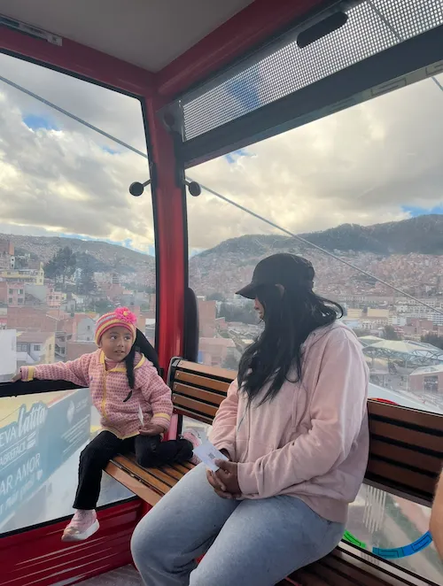
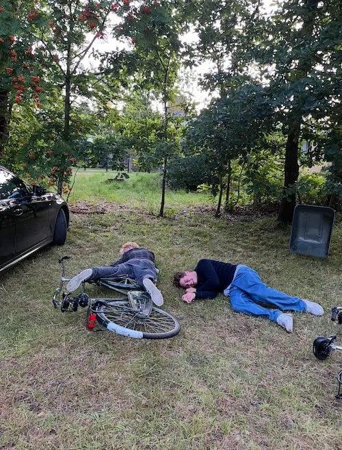

Theme No. 5. PÅ HOVEDE

Theme No. 6. FOR ENDEN AF REGNBUEN
Theme No. 7. FODSPOR

Theme No. 8. SKRÆMMENDE

Theme No. 9. SMIL PÅ LÆBEN
Theme No. 10. NÅR LYSET FALDER

Theme No. 11. DEN NØGEN SANDHED

Theme No. 12. SÅ DET LIGE FØR